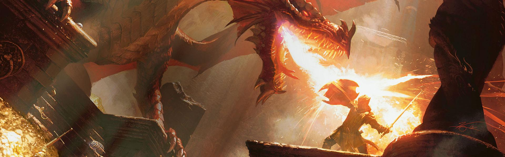

Who am I?
My name is James Brady. I am a twenty four year old Maths Graduate, currently based in Kings Norton in Birmingham.Where did I come from?
I was born Essex and raised near Framlingham in suffolk (in the east of england). Framlingham is a rural town, known for little other than Ed Sheeran and is home to his "Castle on the Hill." at which I spent a lot of time whilst growing up.Where did I go?
I was taught at Thomas Mills High School where I also went to sixth form, before moving to Birmingham to study mathematics.I'm running out of "Cotton Eye Joe" References...
This is what I do in my spare time.
Dungeons and Dragons
I've made a habit of filling what little free time I find with as many events as possible. Including running games of Dungeons and Dragons (a hobby all should try!).
Most recently, I've begun a new story in the world of Shengxiao (custom made map below)
.png)
Card Games and Board Games
When I'm not writing or playing in fantasy stories, I enjoy (or enjoyed pre-Covid) spending time with friends playing board games and card games.